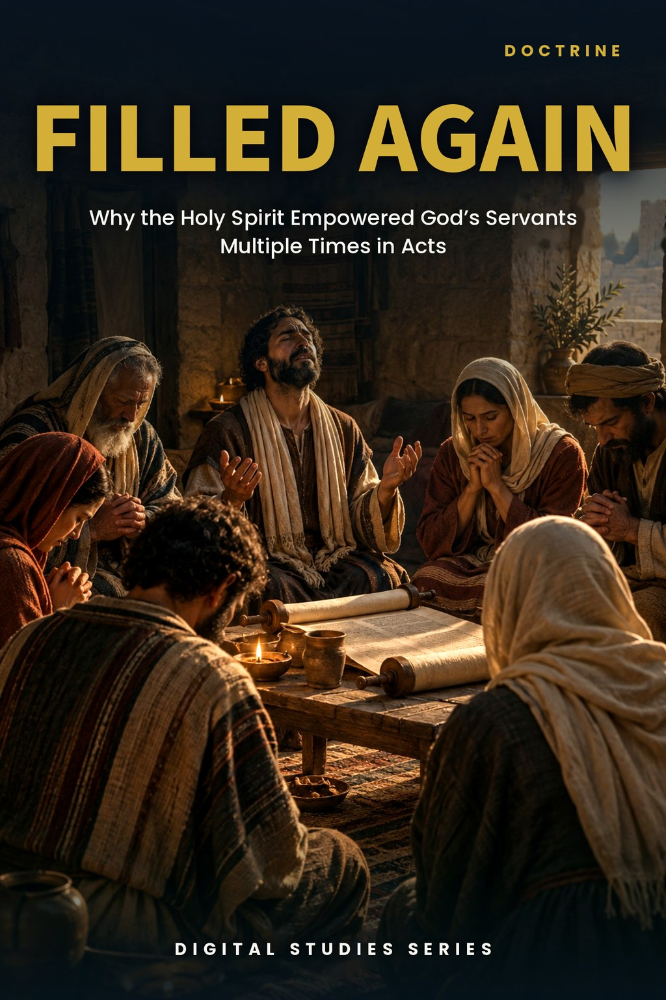
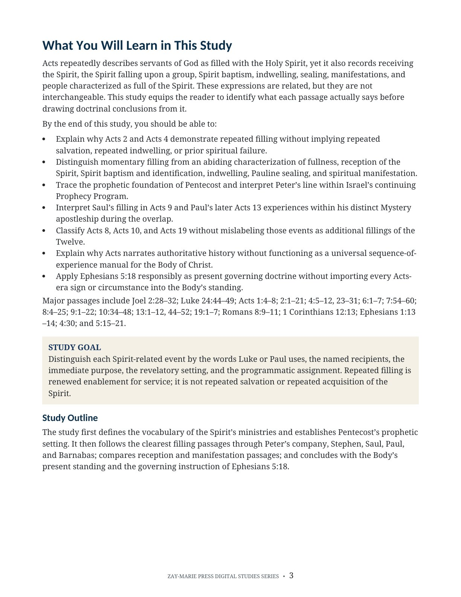
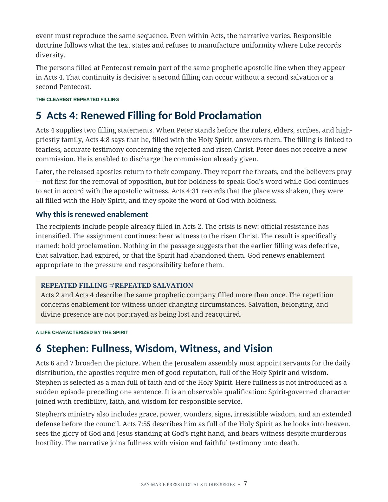
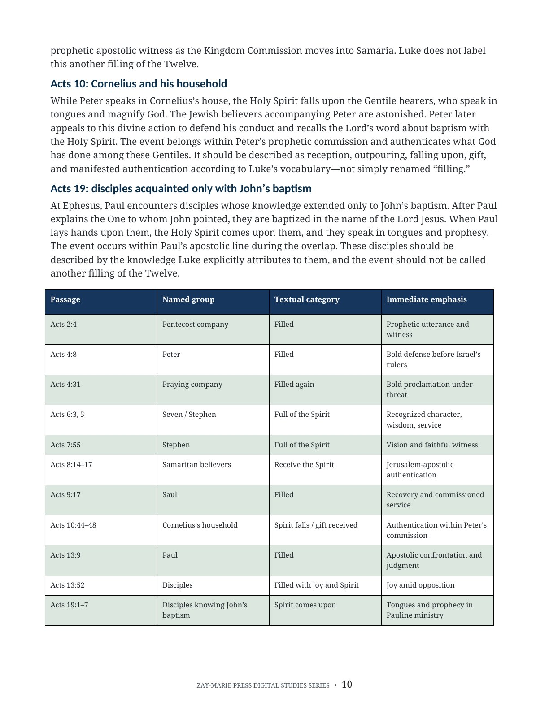
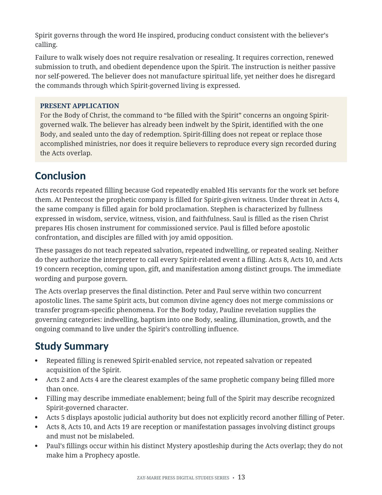

Filled Again
Why the Holy Spirit Empowered God’s Servants Multiple Times in Acts
A passage-controlled study of filling, reception, indwelling, sealing, manifestation, and Spirit-enabled service
Why does Acts record believers and apostolic servants being filled with the Holy Spirit more than once? The repeated language does not describe repeated salvation, repeated indwelling, or spiritual failure. It records renewed enablement for particular acts of witness, proclamation, courage, wisdom, judgment, and service.
Each occurrence is interpreted according to its named recipients, immediate purpose, revelatory setting, and programmatic assignment. The study preserves the distinction between Peter’s prophetic commission and Paul’s Mystery apostleship during the Acts overlap.
Repeated Filling Is Renewed Enablement
Acts 2 and Acts 4 give the clearest evidence: the same prophetic company is filled more than once, first at Pentecost and later in answer to prayer for boldness. Nothing in the second event suggests another salvation or another permanent indwelling. The Spirit renews enablement for the assignment immediately before them.
Other passages require different labels. Some describe an abiding characterization, some the reception or manifestation of the Spirit among distinct groups, and some a particular act of apostolic judgment or witness. Careful interpretation begins by refusing to call every Spirit-related event a filling.
How These Studies Relate
Study 34 explains why apostles could be filled again in Acts 4 without losing and regaining the Spirit.
Study 20 — Understanding Acts 2:38 Read Peter’s earlier Pentecost promise and his audience first; this distinguishes initial Spirit reception from the later renewed enablement recorded in Acts 4.
Study 38 — Why Acts Is Not a Universal Experience Manual Apply the Acts-reading test to repeated filling; it clarifies what a historical event teaches without making each occurrence a universal required sequence.
Distinguish the Spirit’s Ministries Before Applying Them
Prophetic Promise
Trace the promised outpouring behind Pentecost without importing later Pauline doctrine into the prophetic setting.
Receiving and Filling
Separate receiving the Spirit from renewed enablement for a named act of witness or service.
Fullness as Character
Recognize when “full of the Holy Spirit” describes an abiding qualification or spiritual characterization.
Identification and Sealing
Distinguish Spirit baptism, indwelling, and Pauline sealing from narrative manifestations in Acts.
Signs During the Overlap
Place tongues, visions, and apostolic signs within their immediate setting and assigned apostolic line.
Present Application
Read Ephesians 5:18 as an ongoing command for a Spirit-governed walk grounded in the Body’s accomplished standing.
Follow Each Passage by Recipient, Purpose, and Setting
Acts 2:4
The prophetic company is filled and speaks in other tongues at Pentecost.
Acts 4:8, 31
Peter speaks before the rulers, and the gathered company receives renewed boldness.
Acts 6:3, 5; 7:55
Stephen’s fullness marks qualification, wisdom, witness, and vision.
Acts 9:17
Saul is filled in connection with his healing and Pauline commission.
Acts 13:9
Paul confronts Elymas under Spirit-enabled apostolic judgment.
Acts 13:52
The disciples are filled with joy and with the Holy Spirit amid opposition.
Acts 8, 10, 19
Reception and manifestation passages involving distinct groups and settings.
Ephesians 5:18
The Body is commanded to pursue an ongoing Spirit-governed walk.
The Text Must Name the Spirit’s Ministry
“Repeated filling in Acts is renewed enablement for a particular assignment—not repeated salvation, indwelling, or sealing.”
Recipients, immediate purpose, revelatory setting, and programmatic assignment keep narrative description from being turned into a universal experience manual.
Preview the Study Before You Purchase
Click any page to enlarge it for reading.
{kind=link}

Learning Outcomes and Study Goal
Begin with the distinctions that govern every Spirit passage and the interpretive controls used throughout.
{kind=link}

Acts 4 and Stephen
See repeated filling for bold proclamation alongside fullness as qualification, wisdom, witness, and vision.
{kind=link}

Reception Passages Compared
Distinguish Acts 8, Acts 10, and Acts 19 from repeated fillings of the Twelve.
{kind=link}

Present Application and Summary
Apply Ephesians 5:18 responsibly while preserving the Body’s accomplished indwelling, identification, and sealing.
A Focused Study Built for
Doctrinal Precision and Responsible Application
16-Page Biblical Study
A substantive treatment of repeated filling and the Spirit’s distinct ministries in Acts.
Thirteen Teaching Sections
Move from vocabulary and prophetic background through the Acts overlap to present application.
Passage Classification
Identify momentary filling, abiding characterization, reception, manifestation, and other Spirit ministries.
High-Contrast Tables
Compare recipients, settings, purposes, apostolic lines, and warranted conclusions clearly.
Scripture-Tracing Exercise
Work through the principal filling, reception, manifestation, sealing, and application passages.
Review Questions
Test your ability to distinguish narrative events from present governing doctrine.
Teaching Outline
Use a ready framework for teaching repeated filling without collapsing distinct ministries.
Guided Further Study
Grouped passages support continued study of prophecy, the overlap, and Pauline doctrine.
Filled Again
Digital PDF · 16 Pages · For personal use
Want More Than a Focused Study?
Digital Studies examine particular biblical subjects and difficult passages. The 40-lesson Biblical Hermeneutics course teaches a complete, repeatable method for establishing meaning in context, determining proper assignment, and making responsible application.